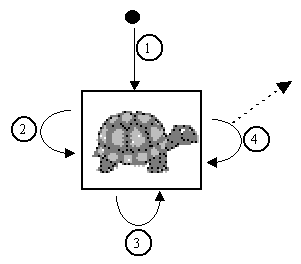
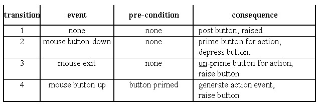
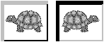
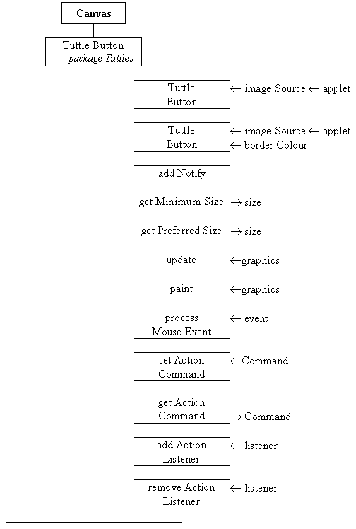

The TuttleButton class will supply a button which implements push-button behaviour and is capable of displaying an image, instead of the text label of the pre-supplied Java AWT Button class. The state transition diagram of the behaviour of a push-button is presented in Figure 5.1 and Table 5.1.

Figure 5.1 The TuttleButton State Transition Diagram

Table 5.1 State table for the TuttleButton STD in Figure 5.1.
The behaviour indicates that a button becomes primed when the mouse button is pressed whilst the mouse pointer is inside the button; this is confirmed to the user by a visual feedback which shows the button as if it were depressed. If the button is released whilst the mouse pointer is still inside the button the button is raised and an action event is generated, as indicated by the dashed arrow leaving transition 4. However, if the mouse pointer is moved outside the button after being primed, the button will be un-primed and raised, and when the mouse pointer is subsequently released no action event will be generated.

Figure 5.2 Highlighting of buttons, (the reversal of the icon is not significant).
The mechanism for showing a raised and depressed button is illustrated in Figure 5.2. The button is surrounded by a pseudo three dimensional border, which has been emphasised in this illustration. It is imagined that the button is illuminated by a light shining from the top left. In the left hand illustration the button is raised so the right and bottom of the button are in shade and are shown in a darker hue. In the right hand illustration the button is depressed so the left and top of the button are in the shade and are shown in a darker hue.
The class diagram for the TuttleButton class is given in Figure 5.3.

Figure 5.3 The TuttleButton class diagram.
The first constructor requires the identity of the Applet and the source of the image to be used by the button to be specified and will use a default, grey, border colour. The second constructor allows the colour to be used for the bordering to be explicitly specified, as well as the Applet and the source for the image. The addNotify() action is used to initialise the button after its peer has been constructed. The getMinimumSize(), getPreferredSize(), update() and paint() actions are used by the button to interact with layout negotations and to display itself, using the techniques which have previously been described. The processMouseEvent() action will implement the behaviour shown in the STD in Figure 5.1, and is supported by the setActionCommand(), getActionCommand(), addActionListener() and removeActionListener() actions. These are provided to allow instances of this class to interact with other Compoenents in a manner directly comparable to the AWT Button class, as described in the previous chapter. The implementation of this class, as far as the end of the constructors, is as follows.
0001 // Filename TuttleButton.java.
0002 // Contains an extended Canvas component to supply
0003 // button behaviour with an image as its label.
0004 //
0005 // Written for the Java Interface book, Chapter 5.
0006 // Fintan Culwin, v 0.2, August 1997.
0007
0008 package Tuttles;
0009
0010 import java.awt.*;
0011 import java.awt.event.*;
0012 import java.applet.*;
0013 import java.awt.image.*;
0014
0015
0016 public class TuttleButton extends Canvas {
0017
0018 private static final int BORDER_WIDTH = 2;
0019 private static final Color DEFAULT_BORDER_COLOR =
0020 new Color( 0x80, 0x80, 0x80);
0021
0022 private Image buttonImage = null;
0023 private String imageSource = null;
0024 private int buttonWidth = -1;
0025 private int buttonHeight = -1;
0026 private boolean pressed = false;
0027 private Color borderColour;
0028 private String actionCommand = null;
0029 private ActionListener itsListener = null;
0030 private Applet itsApplet;
0031
0032
0033 public TuttleButton( String theSource,
0034 Applet applet) {
0035 this( theSource, applet, DEFAULT_BORDER_COLOR);
0036 } // End TuttleButton constructor.
0037
0038 public TuttleButton( String theSource,
0039 Applet applet,
0040 Color colorForBorder) {
0041 super();
0042 imageSource = new String( "Tuttles/Images/" + theSource);
0043 itsApplet = applet;
0044 this.setForeground( colorForBorder);
0045 this.enableEvents( AWTEvent.MOUSE_EVENT_MASK);
0046 } // End TuttleButton constructor.
The class wide constant attributes, BORDER_WIDTH and DEFAULT_BORDER_COLOR, determine the size of the pseudo three dimensional border and the default border colour, if no colour is explicitly specified as the button is constructed. The instance attributes indicate the Image which is to be used and theSource filename where it can be obtained from, the overall buttonWidth and buttonHeight, the pressed state of the button, its borderColor of the button, the commandString and itsListener object, and finally the identity of itsApplet.
The first constructor indirects to the second, passing the DEFAULT_BORDER_COLOR as the Color argument. The second constructor calls the super constructor and then, on line 0042, catenates the theSource argument, identifying the file which contains the image for this button with a path string which indicates that it is expected to be found in the Images sub-directory of the Tuttles package directory. The full pathname and filename string is stored in the imageSource instance attribute. The applet argument is stored in the itsApplet attribute, on line 0043, and colorForBorder is passed as an argument to the inherited setForeground() action. The final step of the constructor is to enable mouse events on the TuttleButton in order that its processMouseEvent() action will be called every time the mouse is used within its extent. The addNotify() action will complete the initialisation of the TuttleButton, and is implemented as follows.
0050 public void addNotify() {
0051
0052 MediaTracker aTracker;
0053
0054 super.addNotify();
0055
0056 buttonImage = ( itsApplet.getImage(
0057 itsApplet.getCodeBase(), imageSource));
0058 aTracker = new MediaTracker( this);
0059 aTracker.addImage( buttonImage, 0);
0060 try {
0061 aTracker.waitForID( 0);
0062 } catch ( InterruptedException exception) {
0063 // Do nothing!
0064 } // End try/ catch.
0065
0066 if ( buttonImage == null ||
0067 buttonImage.getWidth( this) < 1 ||
0068 buttonImage.getHeight( this) < 1 ){
0069 System.err.println( "The image " + imageSource +
0070 "\nCould not be loaded, abending ...");
0071 System.exit( -1);
0072 } // End if.
0073 buttonWidth = buttonImage.getWidth( this) + BORDER_WIDTH *2;
0074 buttonHeight = buttonImage.getHeight(this) + BORDER_WIDTH *2;
0075 this.setSize( buttonWidth, buttonHeight);
0076 } // End addNotify;
The first part of this action, which loads the image from a file on the server which provided the applet, is essentially identical to the loading of an image in the previous chapter. It uses the itsApplet attribute as an argument in the getImage() call on line 0056, to load the file into the buttonImage Image attribute. Should the image not load successfully, for example if the file cannot be found, then the condition, on lines 0066 to 0068, will evaluate true and the program will abend. If the image is loaded successfully then the buttonWidth and buttonHeight attributes are initialised to the width and height of the image, plus an allowance for the border at each edge, and, on line 0075, the size of the Component is established based upon these dimensions. These attributes are used by the getMinimumSize() and getPreferredSize() actions, as follows.
0081 public Dimension getMinimumSize() {
0082 return( new Dimension( buttonWidth, buttonHeight));
0083 } // End getMinimumSize.
0084
0085 public Dimension getPreferredSize() {
0086 return this.getMinimumSize();
0087 } // End getPreferredSize.
The implementation of the update() and paint() actions are as follows.
0090 public void update( Graphics systemContext) {
0091 this.paint( systemContext);
0092 } // End update.
0093
0094 public void paint( Graphics systemContext) {
0095
0096 int index;
0097
0098 systemContext.drawImage( buttonImage, BORDER_WIDTH, BORDER_WIDTH, this);
0099 for ( index=0; index < BORDER_WIDTH; index++) {
0100 systemContext.draw3DRect( index, index,
0101 buttonWidth - index -1,
0102 buttonHeight - index -1, !pressed);
0103 } // End for.
0104 } // End paint.
The update() action indirects to the paint() action for the reasons explained in the last chapter. The paint() action commences, on line 0098, by drawing the buttonImage into the button's window offset from the top left of the window by the width of the border. Once this has happened the border is drawn around the image as a sequence of concentric draw3Drect() calls. The last argument of a draw3Drect() call is a boolean which if true causes the rectangle to be drawn as if raised, and if false depressed. Those parts of the border shown as dark grey in Figure 5.2 are drawn using a darker hue of the component's foreground drawing colour, those parts of the border shown as light grey are drawn using a lighter hue. The negated value of the pressed attribute is used to supply this last argument and its value is controlled by the processMouseEvent(), as follows.
0107 protected void processMouseEvent( MouseEvent event) {
0108 switch ( event.getID()) {
0109
0110 case MouseEvent.MOUSE_EXITED:
0111 pressed = false;
0112 repaint();
0113 break;
0114
0115 case MouseEvent.MOUSE_PRESSED:
0116 pressed = true;
0117 repaint();
0118 break;
0119
0120 case MouseEvent.MOUSE_RELEASED:
0121 if ( (pressed) &&
0122 (itsListener != null) ){
0123 itsListener.actionPerformed( new ActionEvent( this,
0124 ActionEvent.ACTION_PERFORMED,
0125 this.getActionCommand()));
0126 } // End if.
0127 pressed = false;
0128 repaint();
0129 break;
0130 } // End switch.
0131 } // End processMouseEvent.
The MOUSE_EXITED branch of the switch structure ensures that the pressed attribute is false and calls the repaint() action to, indirectly, cause the paint() action to be called. As pressed is false the last argument of the draw3Drect() action will be true and so the button will be drawn in a raised fashion. The MOUSE_PRESSED branch primes the button by setting the pressed attribute true and calls repaint() which will draw the button in a depressed state. Finally the MOUSE_RELEASED action, if the pressed attribute is true and an ActionListener has been registered, calls the actionPerformed() action of itsListener passing as an argument a new ActionEvent containing the TuttleButton's actionCommand. This branch concludes by setting the pressed attribute false and repainting the button. The list of ActionListeners in itsListeners and the commandString attribute are maintained by the remaining four actions, whose implementations are directly comparable with those in the DatePanel class from the previous chapters, as follows.
0134 public void setActionCommand( String command) {
0135 actionCommand = command;
0136 } // End setActionCommand.
0137
0138 public String getActionCommand() {
0139 if ( actionCommand == null) {
0140 return "Tuttle Button";
0141 } else {
0142 return actionCommand;
0143 } // End if.
0144 } // End getActionCommand.
0145
0146
0147 public void addActionListener( ActionListener listener) {
0148 itsListener = AWTEventMulticaster.add( itsListener, listener);
0149 } // End addActionListener.
0150
0151 public void removeActionListener( ActionListener listener) {
0152 itsListener = AWTEventMulticaster.remove( itsListener, listener);
0153 } // End removeActionListener.
Before using instances of the TuttleButton in the semi-direct interface it should be demonstrated to be working correctly; a demonstration harness might be as follows.
0001 // Filename TuttleButtonDemonstration.java.
0002 // A demonstration test harness for the TuttleButton class.
0003 //
0004 // Written for the Java Interface book, Chapter 5.
0005 // Fintan Culwin, v 0.2, August 1997.
0006
0007
0008 import java.awt.*;
0009 import java.applet.*;
0010 import java.awt.event.*;
0011
0012 import Tuttles.TuttleButton;
0013
0014 public class TuttleButtonDemonstration extends Applet
0015 implements ActionListener {
0016
0017 public void init() {
0018
0019 TuttleButton leftTuttleButton;
0020 TuttleButton rightTuttleButton;
0021
0022 this.setBackground( Color.white);
0023
0024 leftTuttleButton = new TuttleButton( "greyltutt.gif", this);
0025 leftTuttleButton.setActionCommand( "Left button");
0026 leftTuttleButton.addActionListener( this);
0027 this.add( leftTuttleButton);
0028
0029 rightTuttleButton = new TuttleButton( "greyrtutt.gif", this, Color.red);
0030 rightTuttleButton.setActionCommand( "Right button");
0031 rightTuttleButton.addActionListener( this);
0032 this.add( rightTuttleButton);
0033 } // End init.
0034
0035
0036 public void actionPerformed( ActionEvent event) {
0037 System.out.println( event.getActionCommand() + " pressed.");
0038 } // End actionPerformed.
0039 } // End class TuttleButtonDemonstration.
The init() action constructs two TuttleButtons, one initialised to display a grey left facing tuttle image ( greyltutt.gif ) with the default grey border and the other a grey right facing tuttle image ( greyrtutt.gif ) with a red border. These two GIF files are stored in the Images sub-directory of the directory on the server which contains the Tuttles package. Figure 5.2 illustrates the appearance of this demonstration harness.
The TuttleButtonDemonstration class implements the ActionListener interface and registers itself as the listener object for both buttons. Its actionPerformed() action will display a message on the console, containing the button's actionCommand, when each of the buttons is pressed. This indicates that the TuttleButtons are calling their registered listener object's actionPerformed() action when they are pressed by the user and that the action can determine which button was pressed. This client class does not have a main() action as the loading of the images from the server relies upon the top level window being an Applet, consequently the demonstration can only be run from a Web browser or an appletviewer utility.